If I understand the full details of Radio Bearer Setup message, I think I can say I understand almost everything of UMTS from the bottom (PHY) to the top(RRC) at least in terms of UE and UTRAN communication.
I also meet many engineers saying "I am just a higher layer people, I don't care much about lower layer issues". Personally I don't think it is valid statement since the higher layer message that they are working on is carrying a lot of lower layer configuration information. You can never understand the full details of higher layer message without knowing the details of lower layer configuration.
However, to be honest, I would like to avoid the lower layer details if possible and I don't think I understand even 50% of the whole details of the full protocol stack.
One extreme case of RRC message with the extreme complexity is Radio Bearer Setup message. There are three main factors which make it so difficult to understand this message and they are as follows :
i) The amount of information : Too many information (Too many information Elements)
ii) Informations from bottom to top : It contains the message related to PHY, Transport layer, MAC, RLC, PDCP. You need knowledge about all of these layers. Not only for the information for each layers, but also for the correlation between each layers.
iii) Message structure is too complicated. You will see in this post -:). First, You need to get familir with overall structure of this message itself. This is the first step you have to do for now.
First I would like to help you about item iii) by specially organizing this page itself mainly thanks to hyperlink capability of html and gradually digging into item ii).
Following is the first level IEs (information elements) of Rel 99 Radio Bearer. Under each section I would give you some sample case. I would use Voice (AMR) radio bearer setup as sample case, but I would add some other radio bearers depending on the situation.
+-message ::= CHOICE [radioBearerSetup]
+-radioBearerSetup ::= CHOICE [r3]
+-r3 ::= SEQUENCE [0]
+-radioBearerSetup-r3 ::= SEQUENCE [001001000100101010100111]
| +-rrc-TransactionIdentifier ::= INTEGER (0..3) [0]
| +-integrityProtectionModeInfo ::= SEQUENCE OPTIONAL:Omit
| +-cipheringModeInfo ::= SEQUENCE OPTIONAL:Omit
| +-activationTime ::= INTEGER (0..255) [176] OPTIONAL:Exist
| +-new-U-RNTI ::= SEQUENCE OPTIONAL:Omit
| +-new-C-RNTI ::= BIT STRING OPTIONAL:Omit
| +-rrc-StateIndicator ::= ENUMERATED [cell-DCH]
| +-utran-DRX-CycleLengthCoeff ::= INTEGER (3..9) [6] OPTIONAL:Exist
| +-ura-Identity ::= BIT STRING OPTIONAL:Omit
| +-cn-InformationInfo ::= SEQUENCE OPTIONAL:Omit
| +-srb-InformationSetupList ::= SEQUENCE OF OPTIONAL:Omit
| +-rab-InformationSetupList ::= SEQUENCE OF SIZE(1..maxRABsetup[16]) [1] OPTIONAL:Exist
| +-rb-InformationAffectedList ::= SEQUENCE OF OPTIONAL:Omit
| +-dl-CounterSynchronisationInfo ::= SEQUENCE OPTIONAL:Omit
| +-ul-CommonTransChInfo ::= SEQUENCE [001] OPTIONAL:Exist
| +-ul-deletedTransChInfoList ::= SEQUENCE OF OPTIONAL:Omit
| +-ul-AddReconfTransChInfoList ::= SEQUENCE OF SIZE(1..maxTrCHpreconf[32]) [4]
| +-dummy ::= CHOICE OPTIONAL:Omit
| +-dl-CommonTransChInfo ::= SEQUENCE [0] OPTIONAL:Exist
| +-dl-DeletedTransChInfoList ::= SEQUENCE OF OPTIONAL:Omit
| +-dl-AddReconfTransChInfoList ::= SEQUENCE OF SIZE(1..maxTrCHpreconf[32]) [4]
| +-frequencyInfo ::= SEQUENCE OPTIONAL:Omit
| +-maxAllowedUL-TX-Power ::= INTEGER OPTIONAL:Omit
| +-ul-ChannelRequirement ::= CHOICE [ul-DPCH-Info] OPTIONAL:Exist
| +-modeSpecificPhysChInfo ::= CHOICE [fdd]
| +-dl-CommonInformation ::= SEQUENCE [1] OPTIONAL:Exist
| +-dl-InformationPerRL-List ::= SEQUENCE OF SIZE(1..maxRL[8]) [1] OPTIONAL:Exist
+-v3a0NonCriticalExtensions ::= SEQUENCE OPTIONAL:Omit
The whole purpose of Radio Bearer Setup message is to convey the information as shown in the following table to UE. Actually it conveys two of these table one for downlink and the other for uplink. You can find a lot of these tables from 6.10 Reference Radio Bearer configurations used in Radio Beaer interoperability testing of 3GPP 34.108. Following table is for DL 12.2/UL 12.2 AMR case.
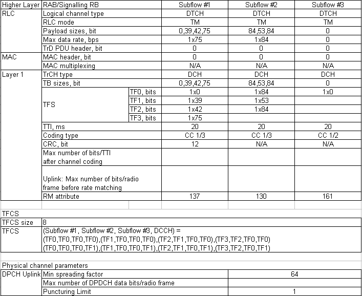
I would organize this page to show you the correlation of these table to each of high level information elements in radio bearer setup message.
There are other big pictures which may help you to understand overall structure of the radio bearer configuration. A simple definition of Radio Bearer Setup message is to define all the channel configuration and the relationships between the channels across the layers. So if you can think up of the details as much as possible, you are in a better position to grasp the details of the Radio Bearer Setup message.
Following is the example for channel map for voice call. As you see, there are three DTCH and four DCCH. The three DTCH are for AMR Class A, B, C traffic and the four DCCH is for carrying RRC/NAS messages. Going through MAC layer, each of DTCH is converted into a separate transport channel (DCH) and all of DCCH are combined into single transport channel (DCH).
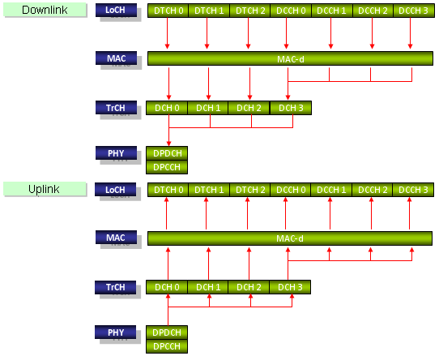
Following is another example for R99 packet communication. DTCH 0 is for carrying the packet data and four DCCH channels are carrying the RRC/NAS messages.

By the same logic, you can draw all the different cases of the communication. If you are more motivated, try to draw the channel maps for following cases.
i) Voice and Packet simultaneous call
ii) 2 PDP Packet call
iii) Voice and 2 PDP Packet call
This is for setting up the RLC and RLC/Transport channel mapping for SRBs, but in Radio Bearer Setup message this IE is empty in most case because the SRB definition is done by RRC Connection Setup message.
Actually rab-InformationSetupList configures layers from RLC all the way up to NAS. In terms of RB definition table, it mainly carries the RLC layer information as shown below. As you would notice, this IE defines the RABs for DTCH. (DCCH parts are defined in RRC Connection Setup).
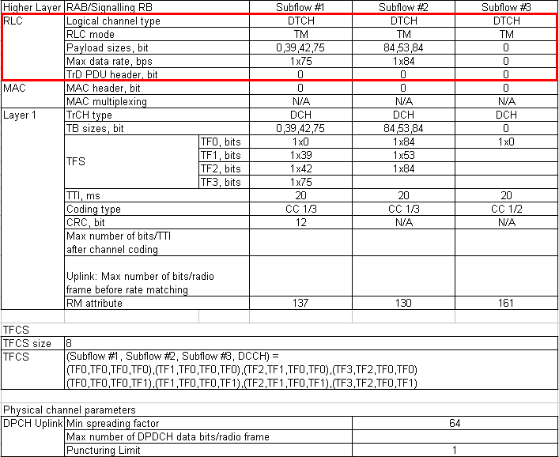
Main components under rab-InformationSetupList is rb-InformationSetupList that carries the RLC configuration for the table shown above. As you see, it has multiple number of RB-InformationSetup IE is as many as the number of Subflow in the radio bearer.
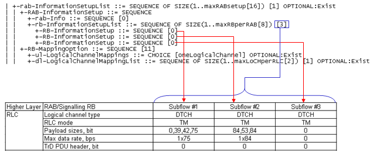
Explaining on this IE using another form of diagram, it is as follows. Basicaly this IE defines the following channel Mapping and the detailed information on Lo CH (RLC). But the mapping shown in blue is done in RRC Connection Setup.
+--------+ +--------+ +--------+ +--------+ +--------+ +--------+ +--------+
Lo CH | DTCH 0 | | DTCH 1 | | DTCH 2 | | DCCH 0 | | DCCH 1 | | DCCH 2 | | DCCH 3 |
+--------+ +--------+ +--------+ +--------+ +--------+ +--------+ +--------+
| | | | | | |
| | | |----------+----------+---------+
| | | |
+--------+ +--------+ +--------+ +--------+
Tr CH | DCH 8 | | DCH 9 | | DCH 10 | | DCH 31|
+--------+ +--------+ +--------+ +--------+
Looking into the full details of this information elements you would get as follows.
As you see, the main component of RB-InformationSetup are rlc-InfoChoice and rb-MappingInfo. rlc-Infochoice defines the type of RLC and the related parameters and rb-MappingInfo defines how the RLC is connected to a specific logical channel and transport channel.
| +-rab-InformationSetupList ::= SEQUENCE OF SIZE(1..maxRABsetup[16]) [1] OPTIONAL:Exist
| | +-RAB-InformationSetup ::= SEQUENCE
| | +-rab-Info ::= SEQUENCE [0]
| | | +-rab-Identity ::= CHOICE [gsm-MAP-RAB-Identity]
| | | | +-gsm-MAP-RAB-Identity ::= BIT STRING SIZE(8) [00000001]
| | | +-cn-DomainIdentity ::= ENUMERATED [cs-domain]
| | | +-nas-Synchronisation-Indicator ::= BIT STRING OPTIONAL:Omit
| | | +-re-EstablishmentTimer ::= ENUMERATED [useT314]
| | +-rb-InformationSetupList ::= SEQUENCE OF SIZE(1..maxRBperRAB[8]) [3]
| | +-RB-InformationSetup ::= SEQUENCE [0]
| | | +-rb-Identity ::= INTEGER (1..32) [5]
| | | +-pdcp-Info ::= SEQUENCE OPTIONAL:Omit
| | | +-rlc-InfoChoice ::= CHOICE [rlc-Info]
| | | | +-rlc-Info ::= SEQUENCE [11]
| | | | +-ul-RLC-Mode ::= CHOICE [ul-TM-RLC-Mode] OPTIONAL:Exist
| | | | | +-ul-TM-RLC-Mode ::= SEQUENCE [0]
| | | | | +-transmissionRLC-Discard ::= CHOICE OPTIONAL:Omit
| | | | | +-segmentationIndication ::= BOOLEAN [FALSE]
| | | | +-dl-RLC-Mode ::= CHOICE [dl-TM-RLC-Mode] OPTIONAL:Exist
| | | | +-dl-TM-RLC-Mode ::= SEQUENCE
| | | | +-segmentationIndication ::= BOOLEAN [FALSE]
| | | +-rb-MappingInfo ::= SEQUENCE OF SIZE(1..maxRBMuxOptions[8]) [1]
| | | +-RB-MappingOption ::= SEQUENCE [11]
| | | +-ul-LogicalChannelMappings ::= CHOICE [oneLogicalChannel] OPTIONAL:Exist
| | | | +-oneLogicalChannel ::= SEQUENCE [0]
| | | | +-ul-TransportChannelType ::= CHOICE [dch]
| | | | | +-dch ::= INTEGER (1..32) [8]
| | | | +-logicalChannelIdentity ::= INTEGER OPTIONAL:Omit
| | | | +-rlc-SizeList ::= CHOICE [configured]
| | | | | +-configured ::= NULL
| | | | +-mac-LogicalChannelPriority ::= INTEGER (1..8) [7]
| | | +-dl-LogicalChannelMappingList ::= SEQUENCE OF SIZE(1..maxLoCHperRLC[2]) [1] OPTIONAL:Exist
| | | +-DL-LogicalChannelMapping ::= SEQUENCE [0]
| | | +-dl-TransportChannelType ::= CHOICE [dch]
| | | | +-dch ::= INTEGER (1..32) [8]
| | | +-logicalChannelIdentity ::= INTEGER OPTIONAL:Omit
| | +-RB-InformationSetup ::= SEQUENCE [0]
| | | +-rb-Identity ::= INTEGER (1..32) [6]
| | | +-pdcp-Info ::= SEQUENCE OPTIONAL:Omit
| | | +-rlc-InfoChoice ::= CHOICE [rlc-Info]
| | | | +-rlc-Info ::= SEQUENCE [11]
| | | | +-ul-RLC-Mode ::= CHOICE [ul-TM-RLC-Mode] OPTIONAL:Exist
| | | | | +-ul-TM-RLC-Mode ::= SEQUENCE [0]
| | | | | +-transmissionRLC-Discard ::= CHOICE OPTIONAL:Omit
| | | | | +-segmentationIndication ::= BOOLEAN [FALSE]
| | | | +-dl-RLC-Mode ::= CHOICE [dl-TM-RLC-Mode] OPTIONAL:Exist
| | | | +-dl-TM-RLC-Mode ::= SEQUENCE
| | | | +-segmentationIndication ::= BOOLEAN [FALSE]
| | | +-rb-MappingInfo ::= SEQUENCE OF SIZE(1..maxRBMuxOptions[8]) [1]
| | | +-RB-MappingOption ::= SEQUENCE [11]
| | | +-ul-LogicalChannelMappings ::= CHOICE [oneLogicalChannel] OPTIONAL:Exist
| | | | +-oneLogicalChannel ::= SEQUENCE [0]
| | | | +-ul-TransportChannelType ::= CHOICE [dch]
| | | | | +-dch ::= INTEGER (1..32) [9]
| | | | +-logicalChannelIdentity ::= INTEGER OPTIONAL:Omit
| | | | +-rlc-SizeList ::= CHOICE [configured]
| | | | | +-configured ::= NULL
| | | | +-mac-LogicalChannelPriority ::= INTEGER (1..8) [7]
| | | +-dl-LogicalChannelMappingList ::= SEQUENCE OF SIZE(1..maxLoCHperRLC[2]) [1] OPTIONAL:Exist
| | | +-DL-LogicalChannelMapping ::= SEQUENCE [0]
| | | +-dl-TransportChannelType ::= CHOICE [dch]
| | | | +-dch ::= INTEGER (1..32) [9]
| | | +-logicalChannelIdentity ::= INTEGER OPTIONAL:Omit
| | +-RB-InformationSetup ::= SEQUENCE [0]
| | +-rb-Identity ::= INTEGER (1..32) [7]
| | +-pdcp-Info ::= SEQUENCE OPTIONAL:Omit
| | +-rlc-InfoChoice ::= CHOICE [rlc-Info]
| | | +-rlc-Info ::= SEQUENCE [11]
| | | +-ul-RLC-Mode ::= CHOICE [ul-TM-RLC-Mode] OPTIONAL:Exist
| | | | +-ul-TM-RLC-Mode ::= SEQUENCE [0]
| | | | +-transmissionRLC-Discard ::= CHOICE OPTIONAL:Omit
| | | | +-segmentationIndication ::= BOOLEAN [FALSE]
| | | +-dl-RLC-Mode ::= CHOICE [dl-TM-RLC-Mode] OPTIONAL:Exist
| | | +-dl-TM-RLC-Mode ::= SEQUENCE
| | | +-segmentationIndication ::= BOOLEAN [FALSE]
| | +-rb-MappingInfo ::= SEQUENCE OF SIZE(1..maxRBMuxOptions[8]) [1]
| | +-RB-MappingOption ::= SEQUENCE [11]
| | +-ul-LogicalChannelMappings ::= CHOICE [oneLogicalChannel] OPTIONAL:Exist
| | | +-oneLogicalChannel ::= SEQUENCE [0]
| | | +-ul-TransportChannelType ::= CHOICE [dch]
| | | | +-dch ::= INTEGER (1..32) [10]
| | | +-logicalChannelIdentity ::= INTEGER OPTIONAL:Omit
| | | +-rlc-SizeList ::= CHOICE [configured]
| | | | +-configured ::= NULL
| | | +-mac-LogicalChannelPriority ::= INTEGER (1..8) [7]
| | +-dl-LogicalChannelMappingList ::= SEQUENCE OF SIZE(1..maxLoCHperRLC[2]) [1] OPTIONAL:Exist
| | +-DL-LogicalChannelMapping ::= SEQUENCE [0]
| | +-dl-TransportChannelType ::= CHOICE [dch]
| | | +-dch ::= INTEGER (1..32) [10]
| | +-logicalChannelIdentity ::= INTEGER OPTIONAL:Omit
Here is another example from Radio Bearer Setup from 384DL/64UL Packet call as another example. One thing you can notice is that it has only one RAB-InformationSetup IE because 384DL/64UL Packet bearer has only one subflow. But you would notice that rlc-Info node become more complicated compared to the one for voice because this packet bearer is using AM mode RLC and it has much more parameters than the RLC TM mode.
| +-rab-InformationSetupList ::= SEQUENCE OF SIZE(1..maxRABsetup[16]) [1] OPTIONAL:Exist
| | +-RAB-InformationSetup ::= SEQUENCE
| | +-rab-Info ::= SEQUENCE [0]
| | | +-rab-Identity ::= CHOICE [gsm-MAP-RAB-Identity]
| | | | +-gsm-MAP-RAB-Identity ::= BIT STRING SIZE(8) [00000101]
| | | +-cn-DomainIdentity ::= ENUMERATED [ps-domain]
| | | +-nas-Synchronisation-Indicator ::= BIT STRING OPTIONAL:Omit
| | | +-re-EstablishmentTimer ::= ENUMERATED [useT315]
| | +-rb-InformationSetupList ::= SEQUENCE OF SIZE(1..maxRBperRAB[8]) [1]
| | +-RB-InformationSetup ::= SEQUENCE [0]
| | +-rb-Identity ::= INTEGER (1..32) [5]
| | +-pdcp-Info ::= SEQUENCE OPTIONAL:Omit
| | +-rlc-InfoChoice ::= CHOICE [rlc-Info]
| | | +-rlc-Info ::= SEQUENCE [11]
| | | +-ul-RLC-Mode ::= CHOICE [ul-AM-RLC-Mode] OPTIONAL:Exist
| | | | +-ul-AM-RLC-Mode ::= SEQUENCE [1]
| | | | +-transmissionRLC-Discard ::= CHOICE [noDiscard]
| | | | | +-noDiscard ::= ENUMERATED [dat10]
| | | | +-transmissionWindowSize ::= ENUMERATED [tw256]
| | | | +-timerRST ::= ENUMERATED [tr500]
| | | | +-max-RST ::= ENUMERATED [rst4]
| | | | +-pollingInfo ::= SEQUENCE [110010] OPTIONAL:Exist
| | | | +-timerPollProhibit ::= ENUMERATED [tpp200] OPTIONAL:Exist
| | | | +-timerPoll ::= ENUMERATED [tp200] OPTIONAL:Exist
| | | | +-poll-PDU ::= ENUMERATED OPTIONAL:Omit
| | | | +-poll-SDU ::= ENUMERATED OPTIONAL:Omit
| | | | +-lastTransmissionPDU-Poll ::= BOOLEAN [TRUE]
| | | | +-lastRetransmissionPDU-Poll ::= BOOLEAN [TRUE]
| | | | +-pollWindow ::= ENUMERATED [pw50] OPTIONAL:Exist
| | | | +-timerPollPeriodic ::= ENUMERATED OPTIONAL:Omit
| | | +-dl-RLC-Mode ::= CHOICE [dl-AM-RLC-Mode] OPTIONAL:Exist
| | | +-dl-AM-RLC-Mode ::= SEQUENCE
| | | +-inSequenceDelivery ::= BOOLEAN [TRUE]
| | | +-receivingWindowSize ::= ENUMERATED [rw512]
| | | +-dl-RLC-StatusInfo ::= SEQUENCE [100]
| | | +-timerStatusProhibit ::= ENUMERATED [tsp200] OPTIONAL:Exist
| | | +-dummy ::= ENUMERATED OPTIONAL:Omit
| | | +-missingPDU-Indicator ::= BOOLEAN [TRUE]
| | | +-timerStatusPeriodic ::= ENUMERATED OPTIONAL:Omit
| | +-rb-MappingInfo ::= SEQUENCE OF SIZE(1..maxRBMuxOptions[8]) [1]
| | +-RB-MappingOption ::= SEQUENCE [11]
| | +-ul-LogicalChannelMappings ::= CHOICE [oneLogicalChannel] OPTIONAL:Exist
| | | +-oneLogicalChannel ::= SEQUENCE [0]
| | | +-ul-TransportChannelType ::= CHOICE [dch]
| | | | +-dch ::= INTEGER (1..32) [24]
| | | +-logicalChannelIdentity ::= INTEGER OPTIONAL:Omit
| | | +-rlc-SizeList ::= CHOICE [configured]
| | | | +-configured ::= NULL
| | | +-mac-LogicalChannelPriority ::= INTEGER (1..8) [8]
| | +-dl-LogicalChannelMappingList ::= SEQUENCE OF SIZE(1..maxLoCHperRLC[2]) [1] OPTIONAL:Exist
| | +-DL-LogicalChannelMapping ::= SEQUENCE [0]
| | +-dl-TransportChannelType ::= CHOICE [dch]
| | | +-dch ::= INTEGER (1..32) [24]
| | +-logicalChannelIdentity ::= INTEGER OPTIONAL:Omit
Tips :
There is one thing you have to keep in mind. The transport channel number (ID) in LogicalChannelMapping IE should match with the transportChannelIdentity in AddReconfTransChInformation. Many people including me -:) easily forget this and spend a lot of time and effort for troubleshooting.
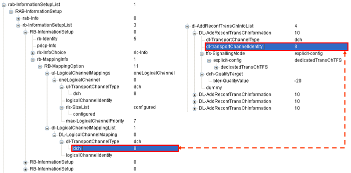
CommonTransChInfo IE carries the TFCS (Transport Format Combination Set) as marked in the table as below. This is the most complicated part of R99 Radio Bearer Setup message.
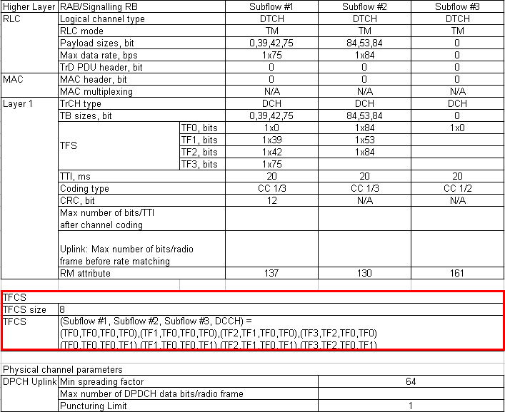
One example of this part is as follows. You would have to figure out how the table can be represented as a sequence of information elements as follows. This was a big headache to me when I first was trying to configure this part.
| +-ul-CommonTransChInfo ::= SEQUENCE [001] OPTIONAL:Exist
| | +-tfc-Subset ::= CHOICE OPTIONAL:Omit
| | +-prach-TFCS ::= CHOICE OPTIONAL:Omit
| | +-modeSpecificInfo ::= CHOICE [fdd] OPTIONAL:Exist
| | +-fdd ::= SEQUENCE
| | +-ul-TFCS ::= CHOICE [normalTFCI-Signalling]
| | +-normalTFCI-Signalling ::= CHOICE [complete]
| | +-complete ::= SEQUENCE
| | +-ctfcSize ::= CHOICE [ctfc6Bit]
| | +-ctfc6Bit ::= SEQUENCE OF SIZE(1..maxTFC[1024]) [6]
| | +- ::= SEQUENCE [1]
| | | +-ctfc6 ::= INTEGER (0..63) [0]
| | | +-powerOffsetInformation ::= SEQUENCE [0] OPTIONAL:Exist
| | | +-gainFactorInformation ::= CHOICE [computedGainFactors]
| | | | +-computedGainFactors ::= INTEGER (0..3) [0]
| | | +-powerOffsetPp-m ::= INTEGER OPTIONAL:Omit
| | +- ::= SEQUENCE [1]
| | | +-ctfc6 ::= INTEGER (0..63) [1]
| | | +-powerOffsetInformation ::= SEQUENCE [0] OPTIONAL:Exist
| | | +-gainFactorInformation ::= CHOICE [computedGainFactors]
| | | | +-computedGainFactors ::= INTEGER (0..3) [0]
| | | +-powerOffsetPp-m ::= INTEGER OPTIONAL:Omit
| | +- ::= SEQUENCE [1]
| | | +-ctfc6 ::= INTEGER (0..63) [11]
| | | +-powerOffsetInformation ::= SEQUENCE [0] OPTIONAL:Exist
| | | +-gainFactorInformation ::= CHOICE [computedGainFactors]
| | | | +-computedGainFactors ::= INTEGER (0..3) [0]
| | | +-powerOffsetPp-m ::= INTEGER OPTIONAL:Omit
| | +- ::= SEQUENCE [1]
| | | +-ctfc6 ::= INTEGER (0..63) [12]
| | | +-powerOffsetInformation ::= SEQUENCE [0] OPTIONAL:Exist
| | | +-gainFactorInformation ::= CHOICE [computedGainFactors]
| | | | +-computedGainFactors ::= INTEGER (0..3) [0]
| | | +-powerOffsetPp-m ::= INTEGER OPTIONAL:Omit
| | +- ::= SEQUENCE [1]
| | | +-ctfc6 ::= INTEGER (0..63) [13]
| | | +-powerOffsetInformation ::= SEQUENCE [0] OPTIONAL:Exist
| | | +-gainFactorInformation ::= CHOICE [computedGainFactors]
| | | | +-computedGainFactors ::= INTEGER (0..3) [0]
| | | +-powerOffsetPp-m ::= INTEGER OPTIONAL:Omit
| | +- ::= SEQUENCE [1]
| | +-ctfc6 ::= INTEGER (0..63) [23]
| | +-powerOffsetInformation ::= SEQUENCE [0] OPTIONAL:Exist
| | +-gainFactorInformation ::= CHOICE [signalledGainFactors]
| | | +-signalledGainFactors ::= SEQUENCE [1]
| | | +-modeSpecificInfo ::= CHOICE [fdd]
| | | | +-fdd ::= SEQUENCE
| | | | +-gainFactorBetaC ::= INTEGER (0..15) [8]
| | | +-gainFactorBetaD ::= INTEGER (0..15) [15]
| | | +-referenceTFC-ID ::= INTEGER (0..3) [0] OPTIONAL:Exist
| | +-powerOffsetPp-m ::= INTEGER OPTIONAL:Omit
You see a lot of TFCS in CommonTransChInfo IE, e.g, (TF3,TF2,TF0,TF1). Then, your question would be "what is the exact meaning of TF3 or TF2 or TF1 etc ?" The answer to this question is defined in AddReconfTransChInfoList IE. These transformat format is defined in the specification as shown below.
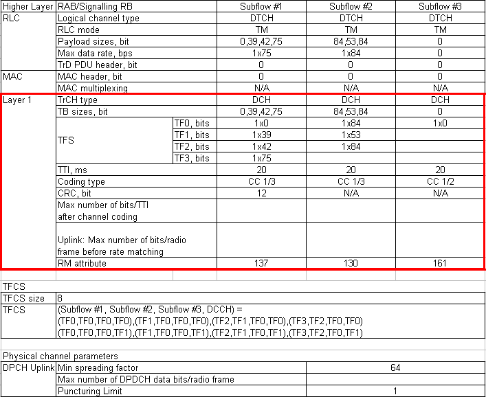
If you take a high level view for this IE and the specification table, you can map as follows.
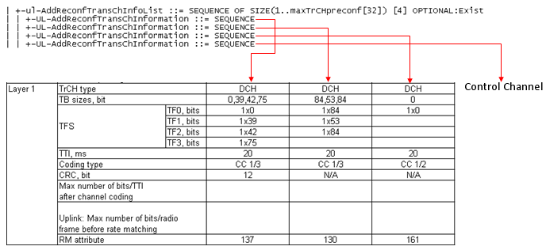
This IE represents the following channel mapping. But in this case, the DCCH part (marked in blue) is configured here as well even though it was already defined in RRC Connection Setup message. Just in terms of blue part mapping, it would be the same as defined in RRC Connection Setup, but in this case the DCCH-DCH transport channel should be combined with DTCH-DCH transport channel. This is why DCCH-DCH is reconfigured here.
+--------+ +--------+ +--------+ +--------+ +--------+ +--------+ +--------+
Lo CH | DTCH 0 | | DTCH 1 | | DTCH 2 | | DCCH 0 | | DCCH 1 | | DCCH 2 | | DCCH 3 |
+--------+ +--------+ +--------+ +--------+ +--------+ +--------+ +--------+
| | | | | | |
| | | |----------+----------+---------+
| | | |
+--------+ +--------+ +--------+ +--------+
Tr CH | DCH 8 | | DCH 9 | | DCH 10 | | DCH 31|
+--------+ +--------+ +--------+ +--------+
If you select only one column and expand it, you will see the following structure.
| +-ul-AddReconfTransChInfoList ::= SEQUENCE OF SIZE(1..maxTrCHpreconf[32]) [4] OPTIONAL:Exist
| | +-UL-AddReconfTransChInformation ::= SEQUENCE ==> This is for the first column of the table shown above
| | | +-ul-TransportChannelType ::= ENUMERATED [dch]
| | | +-transportChannelIdentity ::= INTEGER (1..32) [8]
| | | +-transportFormatSet ::= CHOICE [dedicatedTransChTFS]
| | | +-dedicatedTransChTFS ::= SEQUENCE
| | | +-tti ::= CHOICE [tti20]
| | | | +-tti20 ::= SEQUENCE OF SIZE(1..maxTF[32]) [3]
| | | | +-DedicatedDynamicTF-Info ::= SEQUENCE ==> This is for TF0
| | | | +-DedicatedDynamicTF-Info ::= SEQUENCE ==> This is for TF1
| | | | +-DedicatedDynamicTF-Info ::= SEQUENCE ==> This is for TF2
| | | | +-DedicatedDynamicTF-Info ::= SEQUENCE ==> This is for TF3
| | | +-semistaticTF-Information ::= SEQUENCE
| | | +-channelCodingType ::= CHOICE [convolutional]
| | | | +-convolutional ::= ENUMERATED [third]
| | | +-rateMatchingAttribute ::= INTEGER (1..hiRM[256]) [180]
| | | +-crc-Size ::= ENUMERATED [crc12]
If you expand the all nodes, you would have a full tree as follows.
| +-ul-AddReconfTransChInfoList ::= SEQUENCE OF SIZE(1..maxTrCHpreconf[32]) [4] OPTIONAL:Exist
| | +-UL-AddReconfTransChInformation ::= SEQUENCE
| | | +-ul-TransportChannelType ::= ENUMERATED [dch]
| | | +-transportChannelIdentity ::= INTEGER (1..32) [8]
| | | +-transportFormatSet ::= CHOICE [dedicatedTransChTFS]
| | | +-dedicatedTransChTFS ::= SEQUENCE
| | | +-tti ::= CHOICE [tti20]
| | | | +-tti20 ::= SEQUENCE OF SIZE(1..maxTF[32]) [3]
| | | | +-DedicatedDynamicTF-Info ::= SEQUENCE
| | | | | +-rlc-Size ::= CHOICE [bitMode]
| | | | | | +-bitMode ::= CHOICE [sizeType1]
| | | | | | +-sizeType1 ::= INTEGER (0..127) [0]
| | | | | +-numberOfTbSizeList ::= SEQUENCE OF SIZE(1..maxTF[32]) [1]
| | | | | | +-NumberOfTransportBlocks ::= CHOICE [zero]
| | | | | | +-zero ::= NULL
| | | | | +-logicalChannelList ::= CHOICE [allSizes]
| | | | | +-allSizes ::= NULL
| | | | +-DedicatedDynamicTF-Info ::= SEQUENCE
| | | | | +-rlc-Size ::= CHOICE [bitMode]
| | | | | | +-bitMode ::= CHOICE [sizeType1]
| | | | | | +-sizeType1 ::= INTEGER (0..127) [39]
| | | | | +-numberOfTbSizeList ::= SEQUENCE OF SIZE(1..maxTF[32]) [1]
| | | | | | +-NumberOfTransportBlocks ::= CHOICE [zero]
| | | | | | +-zero ::= NULL
| | | | | +-logicalChannelList ::= CHOICE [allSizes]
| | | | | +-allSizes ::= NULL
| | | | +-DedicatedDynamicTF-Info ::= SEQUENCE
| | | | | +-rlc-Size ::= CHOICE [bitMode]
| | | | | | +-bitMode ::= CHOICE [sizeType1]
| | | | | | +-sizeType1 ::= INTEGER (0..127) [42]
| | | | | +-numberOfTbSizeList ::= SEQUENCE OF SIZE(1..maxTF[32]) [1]
| | | | | | +-NumberOfTransportBlocks ::= CHOICE [one]
| | | | | | +-one ::= NULL
| | | | | +-logicalChannelList ::= CHOICE [allSizes]
| | | | | +-allSizes ::= NULL
| | | | +-DedicatedDynamicTF-Info ::= SEQUENCE
| | | | +-rlc-Size ::= CHOICE [bitMode]
| | | | | +-bitMode ::= CHOICE [sizeType1]
| | | | | +-sizeType1 ::= INTEGER (0..127) [75]
| | | | +-numberOfTbSizeList ::= SEQUENCE OF SIZE(1..maxTF[32]) [1]
| | | | | +-NumberOfTransportBlocks ::= CHOICE [one]
| | | | | +-one ::= NULL
| | | | +-logicalChannelList ::= CHOICE [allSizes]
| | | | +-allSizes ::= NULL
| | | +-semistaticTF-Information ::= SEQUENCE
| | | +-channelCodingType ::= CHOICE [convolutional]
| | | | +-convolutional ::= ENUMERATED [third]
| | | +-rateMatchingAttribute ::= INTEGER (1..hiRM[256]) [180]
| | | +-crc-Size ::= ENUMERATED [crc12]
| | +-UL-AddReconfTransChInformation ::= SEQUENCE
| | | +-ul-TransportChannelType ::= ENUMERATED [dch]
| | | +-transportChannelIdentity ::= INTEGER (1..32) [9]
| | | +-transportFormatSet ::= CHOICE [dedicatedTransChTFS]
| | | +-dedicatedTransChTFS ::= SEQUENCE
| | | +-tti ::= CHOICE [tti20]
| | | | +-tti20 ::= SEQUENCE OF SIZE(1..maxTF[32]) [1]
| | | | +-DedicatedDynamicTF-Info ::= SEQUENCE
| | | | +-rlc-Size ::= CHOICE [bitMode]
| | | | | +-bitMode ::= CHOICE [sizeType1]
| | | | | +-sizeType1 ::= INTEGER (0..127) [84]
| | | | +-numberOfTbSizeList ::= SEQUENCE OF SIZE(1..maxTF[32]) [1]
| | | | | +-NumberOfTransportBlocks ::= CHOICE [one]
| | | | | +-one ::= NULL
| | | | +-logicalChannelList ::= CHOICE [allSizes]
| | | | +-allSizes ::= NULL
| | | | +-DedicatedDynamicTF-Info ::= SEQUENCE
| | | | +-rlc-Size ::= CHOICE [bitMode]
| | | | | +-bitMode ::= CHOICE [sizeType1]
| | | | | +-sizeType1 ::= INTEGER (0..127) [53]
| | | | +-numberOfTbSizeList ::= SEQUENCE OF SIZE(1..maxTF[32]) [1]
| | | | | +-NumberOfTransportBlocks ::= CHOICE [one]
| | | | | +-one ::= NULL
| | | | +-logicalChannelList ::= CHOICE [allSizes]
| | | | +-allSizes ::= NULL
| | | | +-DedicatedDynamicTF-Info ::= SEQUENCE
| | | | +-rlc-Size ::= CHOICE [bitMode]
| | | | | +-bitMode ::= CHOICE [sizeType1]
| | | | | +-sizeType1 ::= INTEGER (0..127) [84]
| | | | +-numberOfTbSizeList ::= SEQUENCE OF SIZE(1..maxTF[32]) [1]
| | | | | +-NumberOfTransportBlocks ::= CHOICE [one]
| | | | | +-one ::= NULL
| | | | +-logicalChannelList ::= CHOICE [allSizes]
| | | | +-allSizes ::= NULL
| | | +-semistaticTF-Information ::= SEQUENCE
| | | +-channelCodingType ::= CHOICE [convolutional]
| | | | +-convolutional ::= ENUMERATED [third]
| | | +-rateMatchingAttribute ::= INTEGER (1..hiRM[256]) [174]
| | | +-crc-Size ::= ENUMERATED [crc0]
| | +-UL-AddReconfTransChInformation ::= SEQUENCE
| | | +-ul-TransportChannelType ::= ENUMERATED [dch]
| | | +-transportChannelIdentity ::= INTEGER (1..32) [10]
| | | +-transportFormatSet ::= CHOICE [dedicatedTransChTFS]
| | | +-dedicatedTransChTFS ::= SEQUENCE
| | | +-tti ::= CHOICE [tti20]
| | | | +-tti20 ::= SEQUENCE OF SIZE(1..maxTF[32]) [1]
| | | | +-DedicatedDynamicTF-Info ::= SEQUENCE
| | | | +-rlc-Size ::= CHOICE [bitMode]
| | | | | +-bitMode ::= CHOICE [sizeType1]
| | | | | +-sizeType1 ::= INTEGER (0..127) [60]
| | | | +-numberOfTbSizeList ::= SEQUENCE OF SIZE(1..maxTF[32]) [2]
| | | | | +-NumberOfTransportBlocks ::= CHOICE [zero]
| | | | | | +-zero ::= NULL
| | | | | +-NumberOfTransportBlocks ::= CHOICE [one]
| | | | | +-one ::= NULL
| | | | +-logicalChannelList ::= CHOICE [allSizes]
| | | | +-allSizes ::= NULL
| | | +-semistaticTF-Information ::= SEQUENCE
| | | +-channelCodingType ::= CHOICE [convolutional]
| | | | +-convolutional ::= ENUMERATED [half]
| | | +-rateMatchingAttribute ::= INTEGER (1..hiRM[256]) [233]
| | | +-crc-Size ::= ENUMERATED [crc0]
| | +-UL-AddReconfTransChInformation ::= SEQUENCE
| | +-ul-TransportChannelType ::= ENUMERATED [dch]
| | +-transportChannelIdentity ::= INTEGER (1..32) [31]
| | +-transportFormatSet ::= CHOICE [dedicatedTransChTFS]
| | +-dedicatedTransChTFS ::= SEQUENCE
| | +-tti ::= CHOICE [tti40]
| | | +-tti40 ::= SEQUENCE OF SIZE(1..maxTF[32]) [1]
| | | +-DedicatedDynamicTF-Info ::= SEQUENCE
| | | +-rlc-Size ::= CHOICE [octetModeType1]
| | | | +-octetModeType1 ::= CHOICE [sizeType1]
| | | | +-sizeType1 ::= INTEGER (0..31) [16]
| | | +-numberOfTbSizeList ::= SEQUENCE OF SIZE(1..maxTF[32]) [2]
| | | | +-NumberOfTransportBlocks ::= CHOICE [zero]
| | | | | +-zero ::= NULL
| | | | +-NumberOfTransportBlocks ::= CHOICE [one]
| | | | +-one ::= NULL
| | | +-logicalChannelList ::= CHOICE [allSizes]
| | | +-allSizes ::= NULL
| | +-semistaticTF-Information ::= SEQUENCE
| | +-channelCodingType ::= CHOICE [convolutional]
| | | +-convolutional ::= ENUMERATED [third]
| | +-rateMatchingAttribute ::= INTEGER (1..hiRM[256]) [170]
| | +-crc-Size ::= ENUMERATED [crc16]
This IE carries the configuration information for Uplink physical channel as marked as below. But this IE also carries quite a lot of additional information which is not defined in the table. The additional information is not specified in this table because the value would change by network side decision for every call connection and they should not influence the upper layer operation. For example, if you change the spreading factor, you may have redefine the TB size and TFS and even RLC parameter as well. So this should be strictly defined in the specification, but you can change the scrambling code without such effect. The only condition is that UE also have to use the same scrambling code and that is why the scrambling code should be included in RRC message to let UE know that the network is expecting UL data with that specific scrambling code.
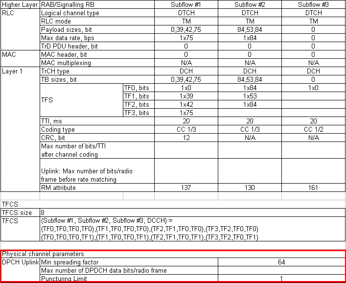
As I mentioned above, only the red part is coming from the specification table and the other parts may vary every time you setup the radio bearer.
| +-ul-ChannelRequirement ::= CHOICE [ul-DPCH-Info] OPTIONAL:Exist
| | +-ul-DPCH-Info ::= SEQUENCE [1]
| | +-ul-DPCH-PowerControlInfo ::= CHOICE [fdd] OPTIONAL:Exist
| | | +-fdd ::= SEQUENCE
| | | +-dpcch-PowerOffset ::= INTEGER (-82..-3) [-30]
| | | +-pc-Preamble ::= INTEGER (0..7) [0]
| | | +-sRB-delay ::= INTEGER (0..7) [7]
| | | +-powerControlAlgorithm ::= CHOICE [algorithm1]
| | | +-algorithm1 ::= INTEGER (0..1) [0]
| | +-modeSpecificInfo ::= CHOICE [fdd]
| | +-fdd ::= SEQUENCE [10]
| | +-scramblingCodeType ::= ENUMERATED [longSC]
| | +-scramblingCode ::= INTEGER (0..16777215) [0]
| | +-numberOfDPDCH ::= INTEGER (1..maxDPDCH-UL[6]) [1] OPTIONAL:Exist
| | +-spreadingFactor ::= ENUMERATED [sf64]
| | +-tfci-Existence ::= BOOLEAN [TRUE]
| | +-numberOfFBI-Bits ::= INTEGER OPTIONAL:Omit
| | +-puncturingLimit ::= ENUMERATED [pl1]
In case of Uplink, ul-ChannelRequirement carries all the physical channel configuration paramters, but in downlink the physical channel configurations splitted into two group. One group is dl-CommonInformation and the other one is dl-informationPerRL-List.
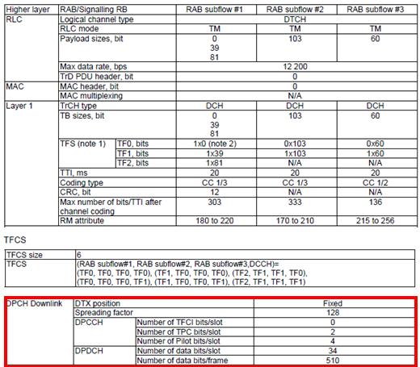
The information shown in the table above is specified as IEs marked in red below. But you would notice that the only two information element is not enough to carry all the information specified in the table above. How can I correlate these IE (information elements) to the table ? Actually you have to bring in another concept calleld 'slot format' for exact correlation between the table and this IE in dl-CommonInformation. I will explain this shortly.
| +-dl-CommonInformation ::= SEQUENCE [1] OPTIONAL:Exist
| | +-dl-DPCH-InfoCommon ::= SEQUENCE OPTIONAL:Exist
| | | +-cfnHandling ::= CHOICE [maintain]
| | | | +-maintain ::= NULL
| | | +-modeSpecificInfo ::= CHOICE [fdd]
| | | +-fdd ::= SEQUENCE [10]
| | | +-dl-DPCH-PowerControlInfo ::= SEQUENCE OPTIONAL:Exist
| | | | +-modeSpecificInfo ::= CHOICE [fdd]
| | | | +-fdd ::= SEQUENCE
| | | | +-dpc-Mode ::= ENUMERATED [singleTPC]
| | | +-powerOffsetPilot-pdpdch ::= INTEGER (0..24) [0]
| | | +-dl-rate-matching-restriction ::= SEQUENCE OPTIONAL:Omit
| | | +-spreadingFactorAndPilot ::= CHOICE [sfd128]
| | | | +-sfd128 ::= ENUMERATED [pb4]
| | | +-positionFixedOrFlexible ::= ENUMERATED [fixed]
| | | +-tfci-Existence ::= BOOLEAN [FALSE]
| | +-modeSpecificInfo ::= CHOICE [fdd]
| | +-fdd ::= SEQUENCE [1010]
| | +-defaultDPCH-OffsetValue ::= INTEGER (0..599) [0] OPTIONAL:Exist
| | +-dpch-CompressedModeInfo ::= SEQUENCE OPTIONAL:Omit
| | +-tx-DiversityMode ::= ENUMERATED [noDiversity] OPTIONAL:Exist
| | +-dummy ::= SEQUENCE OPTIONAL:Omit
To understand the meaning of the information elements marked in red (spreadingFactorAndPilot), you have to refer to the following diagram from 3GPP 25.211. Each slot in DL DPCH has following structure and you see many different information field in the slot. But you cannot just set any arbitrary values for each of the following parameters. There are a certain set of allowable parameters and they are defined in a tabular format in TS 25.211 as shown below.
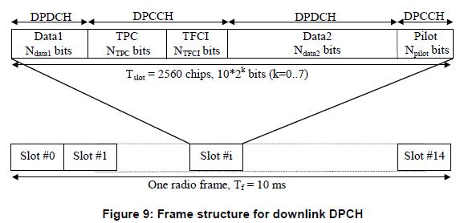
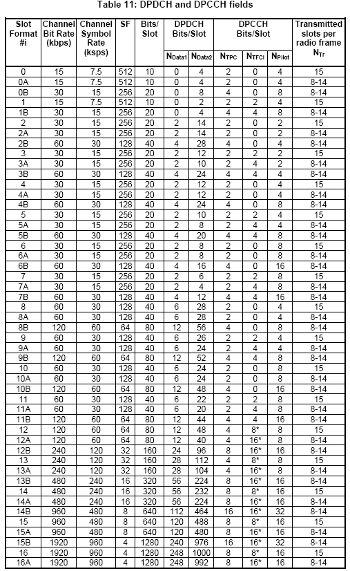
Now let's look into the information carried by spreadingFactorAndPilot , this shows the spreading factor value. If you see all the values under 'SF' column of the slot format table, you will find several candidates (rows) which has the value that matches. But in many case the matching rows would not be single, you will get multiple candidates. Then which one of the matching candidates I have to pick ? If you see spreadingFactorAndPilot, you will get another information specified "pb4" in this example. This "pb4" means that the slot is using 4 bits for pilot signal. Now going back to the slot format table and find the matching value under 'Npilot' column.
| +-dl-InformationPerRL-List ::= SEQUENCE OF SIZE(1..maxRL[8]) [1] OPTIONAL:Exist
| +-DL-InformationPerRL ::= SEQUENCE [10]
| +-modeSpecificInfo ::= CHOICE [fdd]
| | +-fdd ::= SEQUENCE [00]
| | +-primaryCPICH-Info ::= SEQUENCE
| | | +-primaryScramblingCode ::= INTEGER (0..511) [9]
| | +-dummy1 ::= SEQUENCE OPTIONAL:Omit
| | +-dummy2 ::= SEQUENCE OPTIONAL:Omit
| +-dl-DPCH-InfoPerRL ::= CHOICE [fdd] OPTIONAL:Exist
| | +-fdd ::= SEQUENCE [000]
| | +-pCPICH-UsageForChannelEst ::= ENUMERATED [mayBeUsed]
| | +-dpch-FrameOffset ::= INTEGER (0..149) [0]
| | +-secondaryCPICH-Info ::= SEQUENCE OPTIONAL:Omit
| | +-dl-ChannelisationCodeList ::= SEQUENCE OF SIZE(1..maxDPCH-DLchan[8]) [1]
| | | +-DL-ChannelisationCode ::= SEQUENCE [00]
| | | +-secondaryScramblingCode ::= INTEGER OPTIONAL:Omit
| | | +-sf-AndCodeNumber ::= CHOICE [sf128]
| | | | +-sf128 ::= INTEGER (0..127) [5]
| | | +-scramblingCodeChange ::= ENUMERATED OPTIONAL:Omit
| | +-tpc-CombinationIndex ::= INTEGER (0..5) [0]
| | +-dummy ::= ENUMERATED OPTIONAL:Omit
| | +-closedLoopTimingAdjMode ::= ENUMERATED OPTIONAL:Omit
| +-dummy ::= SEQUENCE OPTIONAL:Omit